Release Asset
Release Asset
{{(AssetName && AssetName.length > 15)? (AssetName | slice:0:1)+'..':(AssetName)}}
{{AssetType}}
{{Status}}
{{Status}}
{{Status}}
{{(AssetTagSerialNo && AssetTagSerialNo.length > 15)? (AssetTagSerialNo | slice:0:15)+'..':(AssetTagSerialNo)}}
NO INDOOR DATA
{{(AssetBLELocation && AssetBLELocation.length>15)?(AssetBLELocation| slice:0:15)+ ' ...' : (AssetBLELocation)}}
- - -
{{LastBleDateTime | date: 'short'}}
- - -
{{(AssetTrackerNo.length>15)?(AssetTrackerNo| slice:0:15)+ ' ...' : (AssetTrackerNo)}}
NO OUTDOOR DATA

{{(AssetTrackerLocation.length>15)?(AssetTrackerLocation| slice:0:15)+ ' ...' : (AssetTrackerLocation)}}
- - -
{{LastTrackerDateTime | date: 'short'}}
- - -
Custodian
{{(Custodian.length>10)?(Custodian| slice:0:10)+ ' ...' : (Custodian)}}
From:
{{AssetUseStartTime | date: 'mediumDate'}}
- - - -
To:
{{AssetUseEndTime | date: 'mediumDate'}}
- - - -
Events
{{Alerts}}
Utilization
{{Utilization | number}} %